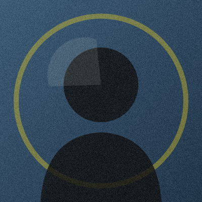
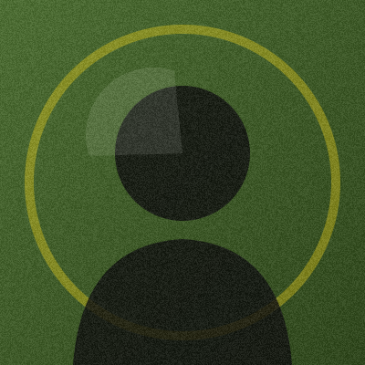
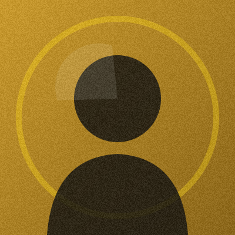

Ana Lugo Premium
Oficio · Video
Comparto mi proceso de edición en pantalla: del borrador a la entrada lista.
3Libros
2.4kSeguidores
27Entradas
Autores independientes que publican aquí. Sigue a quienes te inspiran y no te pierdas sus próximas entradas.
Ana Lugo Premium
Oficio · Video
Comparto mi proceso de edición en pantalla: del borrador a la entrada lista.

Ensayo · Crítica
Defiendo la escritura que no persigue tendencias. Lectores antes que algoritmos.
Miguel Godínez Premium
Crónica
Crónicas de talleres, ciudades y la comunidad que sostiene una voz.
Renata Cano Premium
Oficio · No ficción
Escribo sobre el arte de revisar y construir una carrera literaria por cuenta propia.

Ficción
Novelas sobre familias, cocinas y los años de comidas que las sostienen.

Poesía
Poemas breves sobre la vida ordinaria, escritos para leerse en voz alta.
Ensayo · Crítica
Defiendo la escritura que no persigue tendencias. Lectores antes que algoritmos.
Miguel Godínez Premium
Crónica
Crónicas de talleres, ciudades y la comunidad que sostiene una voz.
Renata Cano Premium
Oficio · No ficción
Escribo sobre el arte de revisar y construir una carrera literaria por cuenta propia.
Poesía
Poemas breves sobre la vida ordinaria, escritos para leerse en voz alta.